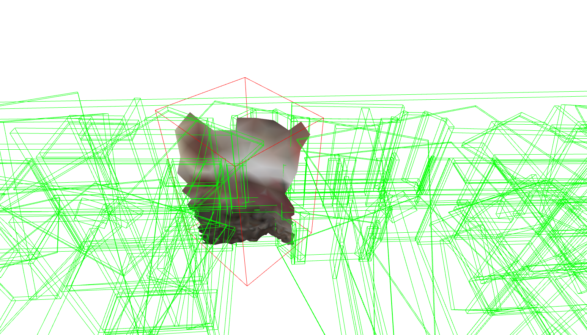

MeshNode
The meshNode class in Geomapi represents the data and metadata of polygonal mesh data. The data itself and methods build upon Open3D TriangleMesh and Trimesh concepts while the metadata builds upon the RDFlib framework:
http://www.open3d.org/docs/latest/tutorial/Basic/mesh.html#
https://trimsh.org/trimesh.base.html
https://rdflib.readthedocs.io/
The code below shows how to create a MeshNode from various inputs.
First the geomapi and external packages are imported
#IMPORT PACKAGES
from rdflib import Graph, URIRef, Literal
import open3d as o3d
import os
from pathlib import Path
#IMPORT MODULES
from context import geomapi
from geomapi.nodes import *
import geomapi.utils as ut
from geomapi.utils import geometryutils as gmu
import geomapi.tools as tl
MeshNode from properties
A placeholder MeshNode can be initialised without any data or metadata
node=MeshNode(subject='myNode',
name='myName')
{key:value for key, value in node.__dict__.items() if not key.startswith('__') and not callable(key)}
{'pointCount': None,
'faceCount': None,
'_cartesianBounds': None,
'_orientedBounds': None,
'_orientedBoundingBox': None,
'_subject': rdflib.term.URIRef('file:///myNode'),
'_graph': None,
'_graphPath': None,
'_path': None,
'_name': 'myName',
'_timestamp': None,
'_resource': None,
'_cartesianTransform': None}
MeshNode from Path
Instead, it is much more likely to initialise a MeshNode from a path containing an .obj or .ply file. This sets the:
subject
name
timestamp
filePath=os.path.join(Path(os.getcwd()).parents[2],'test','testfiles','MESH','Precast Stair_Stair_1181900 Landing 1.obj')
node=MeshNode(path=filePath)
{key:value for key, value in node.__dict__.items() if not key.startswith('__') and not callable(key)}
{'pointCount': None,
'faceCount': None,
'_cartesianBounds': None,
'_orientedBounds': None,
'_orientedBoundingBox': None,
'_subject': rdflib.term.URIRef('file:///Precast_Stair_Stair_1181900_Landing_1'),
'_graph': None,
'_graphPath': None,
'_path': 'd:\\Scan-to-BIM repository\\geomapi\\test\\testfiles\\MESH\\Precast Stair_Stair_1181900 Landing 1.obj',
'_name': 'Precast Stair_Stair_1181900 Landing 1',
'_timestamp': '2022-08-02T08:25:01',
'_resource': None,
'_cartesianTransform': None}
NOTE: GetResource is optional and might slow down any analysis. Only work with data when all metadata options have been exhausted.
node=MeshNode(path=filePath, getResource=True)
{key:value for key, value in node.__dict__.items() if not key.startswith('__') and not callable(key)}
{'pointCount': 24,
'faceCount': 44,
'_cartesianBounds': array([-15.33829975, -12.29339981, 72.86849976, 75.14150238,
9.96000004, 10.22000027]),
'_orientedBounds': array([[-14.77782442, 75.91900201, 10.22442134],
[-11.71133823, 73.70850378, 10.21801638],
[-16.18895543, 73.96140652, 10.23185056],
[-14.77867795, 75.91859696, 9.95557148],
[-13.12332277, 71.75050325, 9.95659574],
[-16.18980896, 73.96100148, 9.9630007 ],
[-11.71219175, 73.70809874, 9.94916652],
[-13.12246924, 71.75090829, 10.2254456 ]]),
'_orientedBoundingBox': OrientedBoundingBox: center: (-13.9506, 73.8348, 10.0905), extent: 3.78017, 2.4132, 0.268852),
'_subject': rdflib.term.URIRef('file:///Precast_Stair_Stair_1181900_Landing_1'),
'_graph': None,
'_graphPath': None,
'_path': 'd:\\Scan-to-BIM repository\\geomapi\\test\\testfiles\\MESH\\Precast Stair_Stair_1181900 Landing 1.obj',
'_name': 'Precast Stair_Stair_1181900 Landing 1',
'_timestamp': '2022-08-02T08:25:01',
'_resource': TriangleMesh with 24 points and 44 triangles.,
'_cartesianTransform': array([[ 1. , 0. , 0. , -13.47834166],
[ 0. , 1. , 0. , 73.99623426],
[ 0. , 0. , 1. , 10.09000015],
[ 0. , 0. , 0. , 1. ]])}
NOTE: GetMetadata (bool) by default is True. As such, when data is imported, the cartesianBounds, orientedBounds, cartesianTransform and orientedBoundingBox is automatically extracted.
MeshNode from resource
A similar result is achieved by initialising a MeshNode from a Open3D.Geometry.TriangleMesh or Trimesh.trimesh instance. In this case, GetResource (bool) means nothing.
mesh=o3d.io.read_triangle_mesh(filePath)
node=MeshNode(resource=mesh)
{key:value for key, value in node.__dict__.items() if not key.startswith('__') and not callable(key)}
{'pointCount': 24,
'faceCount': 44,
'_cartesianBounds': array([-15.33829975, -12.29339981, 72.86849976, 75.14150238,
9.96000004, 10.22000027]),
'_orientedBounds': array([[-14.77782442, 75.91900201, 10.22442134],
[-11.71133823, 73.70850378, 10.21801638],
[-16.18895543, 73.96140652, 10.23185056],
[-14.77867795, 75.91859696, 9.95557148],
[-13.12332277, 71.75050325, 9.95659574],
[-16.18980896, 73.96100148, 9.9630007 ],
[-11.71219175, 73.70809874, 9.94916652],
[-13.12246924, 71.75090829, 10.2254456 ]]),
'_orientedBoundingBox': OrientedBoundingBox: center: (-13.9506, 73.8348, 10.0905), extent: 3.78017, 2.4132, 0.268852),
'_subject': rdflib.term.URIRef('file:///c1bc9eaa-1d70-11ed-b067-c8f75043ce59'),
'_graph': None,
'_graphPath': None,
'_path': None,
'_name': 'c1bc9eaa-1d70-11ed-b067-c8f75043ce59',
'_timestamp': None,
'_resource': TriangleMesh with 24 points and 44 triangles.,
'_cartesianTransform': array([[ 1. , 0. , 0. , -13.47834166],
[ 0. , 1. , 0. , 73.99623426],
[ 0. , 0. , 1. , 10.09000015],
[ 0. , 0. , 0. , 1. ]])}
NOTE: The cartesianTransform extracted from paths or resources are void of rotationmatrices as this metadata is not part of the fileformat. The translation thus represents the center of the geometry.
MeshNode from Graph and graphPath
If a mesh was already serialized, a node can be initialised from the graph or graphPath.
NOTE: The graphPath is the more complete option as it is used to absolutize the node’s path information. However, it is also the slower option as the entire graph encapsulation the node is parsed multiple times.
USE: linkeddatatools.graph_to_nodes resolves this issue.
graphPath = os.path.join(Path(os.getcwd()).parents[2],'test','testfiles','meshGraph.ttl')
graph=Graph().parse(graphPath)
#only print first node
newGraph=Graph()
newGraph=ut.bind_ontologies(newGraph)
newGraph+=graph.triples((URIRef('file:///Basic_Wall_000_WA_DummyWall_20mm_1130411'),None,None))
print(newGraph.serialize())
@prefix e57: <http://libe57.org#> .
@prefix openlabel: <https://www.asam.net/index.php?eID=dumpFile&t=f&f=3876&token=413e8c85031ae64cc35cf42d0768627514868b2f#> .
@prefix v4d: <https://w3id.org/v4d/core#> .
@prefix xsd: <http://www.w3.org/2001/XMLSchema#> .
<file:///Basic_Wall_000_WA_DummyWall_20mm_1130411> a v4d:MeshNode ;
e57:cartesianBounds """[-14.01650047 -13.62110043 69.10179901 69.13130188 13.97000027\r
17.20999908]""" ;
e57:cartesianTransform """[[ 1. 0. 0. -13.81880021]\r
[ 0. 1. 0. 69.11655045]\r
[ 0. 0. 1. 15.58999968]\r
[ 0. 0. 0. 1. ]]""" ;
e57:pointCount 8 ;
v4d:accuracy "0.05"^^xsd:float ;
v4d:faceCount 12 ;
v4d:name "Basic Wall_000_WA_DummyWall 20mm_1130411" ;
v4d:path "MESH\\Basic Wall_000_WA_DummyWall 20mm_1130411.obj" ;
openlabel:sensor "Hololens 2" ;
openlabel:timestamp "2022-04-06 15:16:28" .
node=MeshNode(graphPath=graphPath)
{key:value for key, value in node.__dict__.items() if not key.startswith('__') and not callable(key)}
{'pointCount': 8,
'faceCount': 12,
'_cartesianBounds': array([-14.01650047, -13.62110043, 69.10179901, 69.13130188,
13.97000027, 17.20999908]),
'_orientedBounds': None,
'_orientedBoundingBox': None,
'_subject': rdflib.term.URIRef('file:///Basic_Wall_000_WA_DummyWall_20mm_1130411'),
'_graph': <Graph identifier=N77dd02aa430140ae8f8a6b853162824b (<class 'rdflib.graph.Graph'>)>,
'_graphPath': 'd:\\Scan-to-BIM repository\\geomapi\\test\\testfiles\\meshGraph.ttl',
'_path': 'd:\\Scan-to-BIM repository\\geomapi\\test\\testfiles\\MESH\\Basic Wall_000_WA_DummyWall 20mm_1130411.obj',
'_name': 'Basic Wall_000_WA_DummyWall 20mm_1130411',
'_timestamp': '2022-04-06T15:16:28',
'_resource': None,
'_cartesianTransform': array([[ 1. , 0. , 0. , -13.81880021],
[ 0. , 1. , 0. , 69.11655045],
[ 0. , 0. , 1. , 15.58999968],
[ 0. , 0. , 0. , 1. ]]),
'type': 'https://w3id.org/v4d/core#MeshNode',
'accuracy': 0.05,
'sensor': 'Hololens 2'}
MeshNode to Graph
The Graph serialisation is inherited from Node functionality.
node=MeshNode(subject='myNode',
path=filePath,
getResource=True)
newGraphPath = os.path.join(os.getcwd(),'myGraph.ttl')
node.to_graph(newGraphPath)
newNode=Node(graphPath=newGraphPath)
print(node.graph.serialize())
@prefix e57: <http://libe57.org#> .
@prefix openlabel: <https://www.asam.net/index.php?eID=dumpFile&t=f&f=3876&token=413e8c85031ae64cc35cf42d0768627514868b2f#> .
@prefix v4d: <https://w3id.org/v4d/core#> .
@prefix xsd: <http://www.w3.org/2001/XMLSchema#> .
<file:///myNode> a v4d:MeshNode ;
e57:cartesianBounds """[-15.33829975 -12.29339981 72.86849976 75.14150238 9.96000004
10.22000027]""" ;
e57:cartesianTransform """[[ 1. 0. 0. -13.47834166]
[ 0. 1. 0. 73.99623426]
[ 0. 0. 1. 10.09000015]
[ 0. 0. 0. 1. ]]""" ;
e57:pointCount 24 ;
v4d:faceCount 44 ;
v4d:name "Precast Stair_Stair_1181900 Landing 1" ;
v4d:orientedBounds """[[-14.77782442 75.91900201 10.22442134]
[-11.71133823 73.70850378 10.21801638]
[-16.18895543 73.96140652 10.23185056]
[-14.77867795 75.91859696 9.95557148]
[-13.12332277 71.75050325 9.95659574]
[-16.18980896 73.96100148 9.9630007 ]
[-11.71219175 73.70809874 9.94916652]
[-13.12246924 71.75090829 10.2254456 ]]""" ;
v4d:path "..\\..\\..\\test\\testfiles\\MESH\\Precast Stair_Stair_1181900 Landing 1.obj" ;
openlabel:timestamp "2022-08-02T08:25:01" .
MeshNode prefix relations
MeshNodes can be attributed with a range of relationships. This is extremely usefull for Graph navigation and linking together different resources. In Semantic Web Technologies, relationships are defined by triples that have other subjects as literals.
In this first example, we perform a subselection on a node based on the omg.isDerivedFromGeometry relation.
filePath=os.path.join(Path(os.getcwd()).parents[2],'test','testfiles','MESH','week22.obj')
myNode=MeshNode(path=filePath,getResource=True)
print(myNode.resource)
TriangleMesh with 330263 points and 485077 triangles.
#croppingGeometry
box=o3d.geometry.TriangleMesh.create_box(width=10, height=10, depth=10)
box=box.get_oriented_bounding_box()
box.translate([50,50,0])
box.color=[1,0,0]
croppedGeometry=myNode.resource.crop(box)
print(croppedGeometry)
[Open3D WARNING] [SelectByIndex] This mesh contains triangle uvs that are not handled in this function
TriangleMesh with 5457 points and 10637 triangles.

subNode=MeshNode(subject='mySubNode',
resource=croppedGeometry,
isDerivedFromGeometry=myNode.subject)
subNode.to_graph()
print(subNode.graph.serialize())
@prefix e57: <http://libe57.org#> .
@prefix omg: <https://w3id.org/omg#> .
@prefix v4d: <https://w3id.org/v4d/core#> .
@prefix xsd: <http://www.w3.org/2001/XMLSchema#> .
<file:///mySubNode> a v4d:MeshNode ;
e57:cartesianBounds "[50.00110626 59.99737167 50.00030136 59.99775696 3.61150765 6.80015469]" ;
e57:cartesianTransform """[[ 1. 0. 0. 54.76393966]
[ 0. 1. 0. 54.55544061]
[ 0. 0. 1. 3.96772196]
[ 0. 0. 0. 1. ]]""" ;
e57:pointCount 5457 ;
omg:isDerivedFromGeometry "file:///week22" ;
v4d:faceCount 10637 ;
v4d:orientedBounds """[[54.98500194 65.04216759 5.28071617]
[65.00704144 55.38643459 5.6780494 ]
[45.48973927 55.26101097 7.08691 ]
[54.73196446 64.63378783 1.73896801]
[55.25874129 45.19689822 3.94249506]
[45.23670179 54.85263122 3.54516184]
[64.75400396 54.97805483 2.13630124]
[55.51177877 45.60527797 7.48424322]]""" .
MeshNode custom relationships
When designing a new analysis, there is often need for custom relations and properties. Both can be just asssigned as instance variables, which will be serialized by default under the v4d ontology.
import ifcopenshell
ifcPath=os.path.join(Path(os.getcwd()).parents[2],'test','testfiles','IFC','Academiestraat_parking.ifc')
ifc = ifcopenshell.open(ifcPath)
ifcWall=ifc.by_guid('06v1k9ENv8DhGMCvKUuLQV')
bimNode=BIMNode(resource=ifcWall)
print(bimNode.subject)
file:///Basic_Wall_168_WA_f2_Soilmix_600mm_956569_06v1k9ENv8DhGMCvKUuLQV
croppedGeometry=myNode.resource.crop(bimNode.resource.get_oriented_bounding_box())
print(croppedGeometry)
[Open3D WARNING] [SelectByIndex] This mesh contains triangle uvs that are not handled in this function
TriangleMesh with 176 points and 217 triangles.

subNode=MeshNode(subject='mySubNode',
resource=croppedGeometry,
isDerivedFromGeometry=myNode.subject,
isDerivedFromIFC=ifcPath, #custom
isWithinBoundaryOf=bimNode.subject,
offsetDistanceCalculation=0.1)
subNode.to_graph()
print(subNode.graph.serialize())
@prefix e57: <http://libe57.org#> .
@prefix omg: <https://w3id.org/omg#> .
@prefix v4d: <https://w3id.org/v4d/core#> .
@prefix xsd: <http://www.w3.org/2001/XMLSchema#> .
<file:///mySubNode> a v4d:MeshNode ;
e57:cartesianBounds """[-15.47279358 -14.65663528 72.94135284 75.88972473 4.45037508
6.42876816]""" ;
e57:cartesianTransform """[[ 1. 0. 0. -15.14809074]
[ 0. 1. 0. 74.72710605]
[ 0. 0. 1. 5.3706931 ]
[ 0. 0. 0. 1. ]]""" ;
e57:pointCount 176 ;
omg:isDerivedFromGeometry "file:///week22" ;
v4d:faceCount 217 ;
v4d:isDerivedFromIFC "d:\\Scan-to-BIM repository\\geomapi\\test\\testfiles\\IFC\\Academiestraat_parking.ifc" ;
v4d:isWithinBoundaryOf "file:///Basic_Wall_168_WA_f2_Soilmix_600mm_956569_06v1k9ENv8DhGMCvKUuLQV" ;
v4d:offsetDistanceCalculation "0.1"^^xsd:float ;
v4d:orientedBounds """[[-14.64414204 72.9709104 6.37267627]
[-15.39184782 75.87261175 6.44123073]
[-14.58012432 73.03350824 4.4213251 ]
[-14.87577248 72.91144883 6.36316971]
[-15.55946053 75.87574803 4.48037301]
[-14.81175476 72.97404668 4.41181855]
[-15.62347825 75.81315019 6.43172418]
[-15.32783009 75.9352096 4.48987956]]""" .
MeshNode with 3rd party ontologies
Additionally, 3rd party ontologies can be registered in the namespace of the node.graph and the relationship can be manually attached to the graph.
import rdflib
subNode=MeshNode(subject='mySubNode')
subNode.to_graph()
myOntology = rdflib.Namespace('http://myOntology#')
subNode.graph.bind('myOntology', myOntology)
subNode.graph.add((subNode.subject,myOntology['myProperty'],Literal(0.1) ))
subNode.graph.add((subNode.subject,myOntology['myRelation'],myNode.subject ))
print(subNode.graph.serialize())
@prefix myOntology: <http://myOntology#> .
@prefix v4d: <https://w3id.org/v4d/core#> .
@prefix xsd: <http://www.w3.org/2001/XMLSchema#> .
<file:///mySubNode> a v4d:MeshNode ;
myOntology:myProperty 1e-01 ;
myOntology:myRelation <file:///week22> .